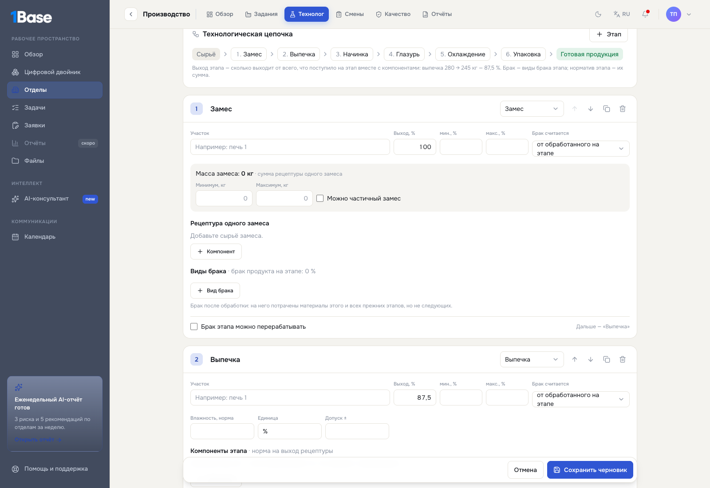
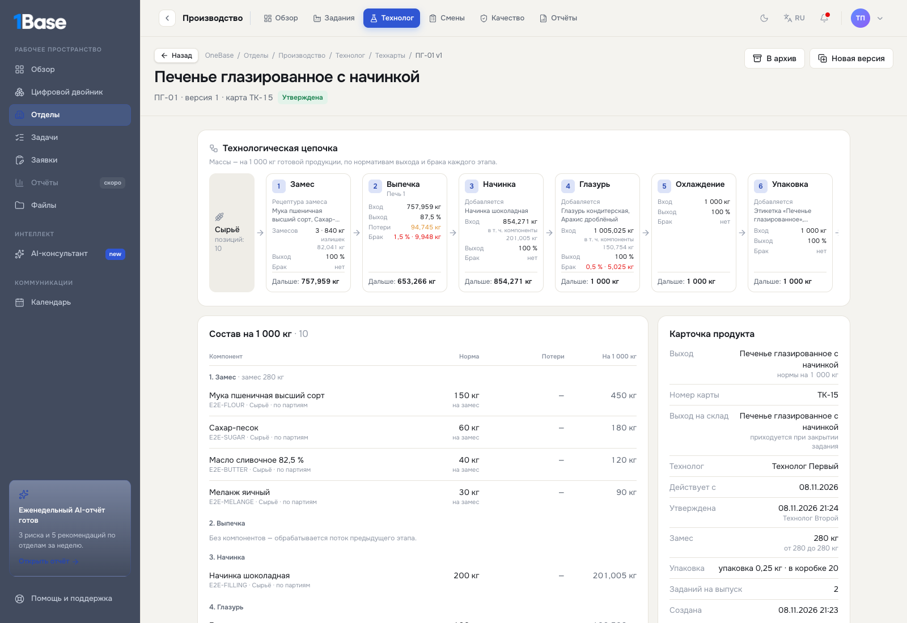
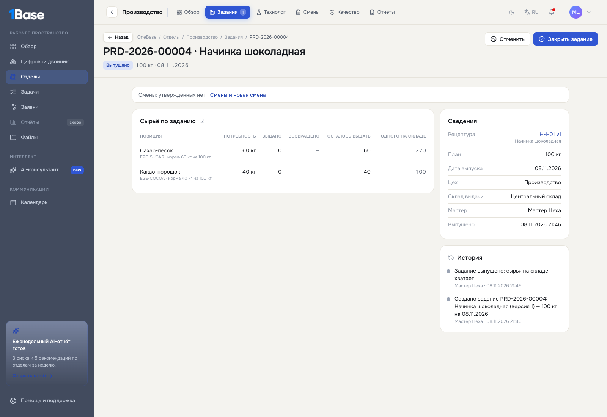
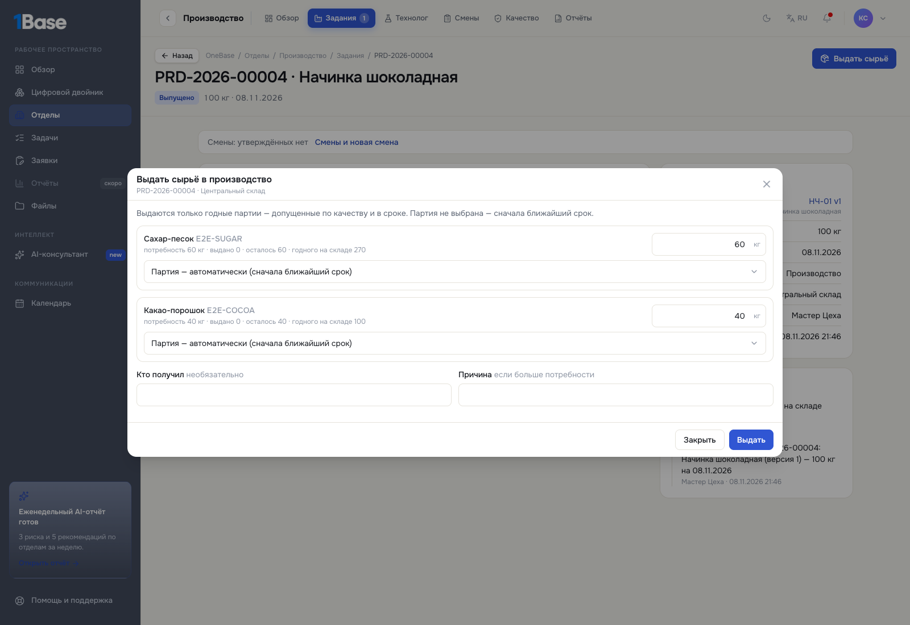
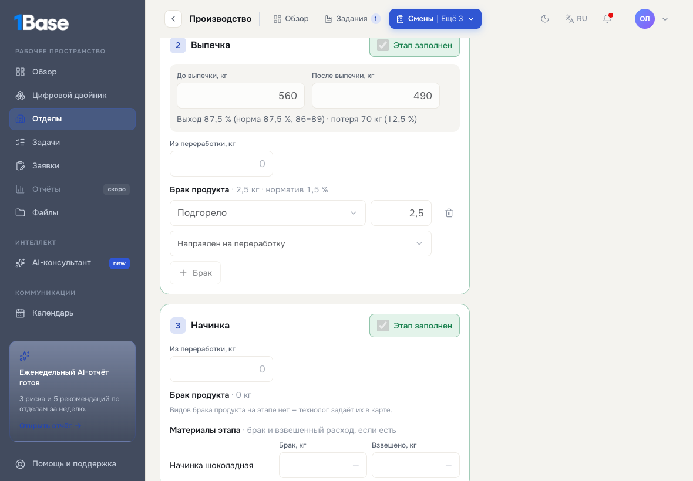
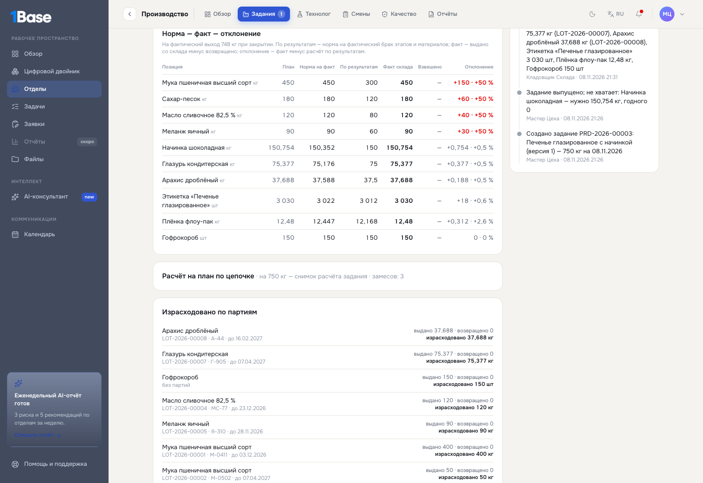
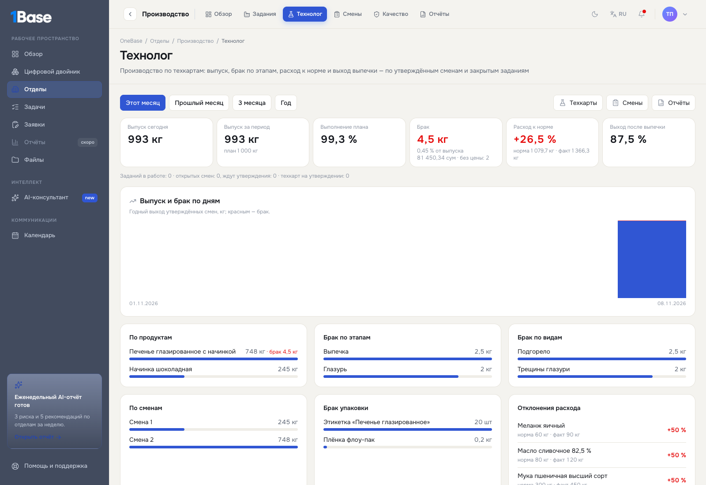

Техкарты продуктов, задания на выпуск, сменные отчёты операторов, сверка нормы и факта, полуфабрикаты через склад, стоимость брака и панель технолога. Для технологов, мастеров и начальников смен, операторов и кладовщиков.
| Роль | Что делает |
|---|---|
| Технолог | Создаёт техкарты и их версии, отправляет на утверждение, утверждает чужие версии. Задания и расход видит. |
| Начальник производства (руководитель отдела «Производство») | Утверждает техкарты, видит всё по производству. |
| Мастер (роль «Производство») | Создаёт и выпускает задания, утверждает и возвращает смены, закрывает задания. |
| Оператор производства | Открывает смену, вносит замесы, выпечку, брак, упаковку, взвешивание; закрывает смену. |
| Кладовщик склада задания | Выдаёт сырьё в производство, принимает возврат, приходует выход (полуфабрикат или продукцию). |
Права проверяет сервер: чужое действие не пройдёт, даже если кнопку как-то нажать. Свою версию техкарты технолог не утвердит, закрытую собой смену никто не утвердит сам.
Где: «Производство → Технолог → Техкарты → Новая техкарта».

Сохраняется черновик. Если карта не считается (не хватает массы упаковки, компоненты тяжелее выхода), вверху видно, что исправить. «На утверждение» — утверждает другой технолог или начальник производства. Утверждённую версию не правят: «Новая версия» создаёт копию; после её утверждения прежняя уходит в архив, а созданные по ней задания сохраняют свои расчёты.

Мастер: «Производство → Задания → Новое задание» — рецептура, сколько выпустить, дата, цех, склад. Потребность считается по цепочке сразу: замесы, сырьё, начинка, глазурь, упаковка. «Сохранить черновик» → «Выпустить». Если годного сырья не хватает, это видно в задании.

Кладовщик: «Выдать сырьё» в карточке задания. Партию можно не выбирать — возьмутся годные с ближайшим сроком. Больше потребности — только с причиной. «Возврат на склад» — остаток после смены, в ту же партию.

Где: «Производство → Смены → Новая смена» или в задании — «Смены и новая смена». Экран рассчитан на планшет.

Справа — чего не хватает, чтобы закрыть смену. «Закрыть смену» — когда всё заполнено. Утверждает мастер или начальник производства, не тот, кто закрыл. Утверждённую смену не правят: ошибку исправляет «Корректировка» с причиной.
Мастер: «Закрыть задание», фактический выход — по умолчанию годный выход утверждённых смен.
«Норма — факт — отклонение» по каждой позиции: план, норма на фактический выход, расход по результатам смен (на фактические замесы и брак), факт склада (выдано минус возвращено), взвешено, отклонение.

Если в техкарте указана позиция склада выхода, после закрытия кладовщик нажимает «Оприходовать выход». Создаётся партия: номер задания, дата выпуска, срок по сроку хранения позиции. Второй раз выход не приходуется. Партию выдают в другие задания как сырьё, и по ней видно, в какие продукты она ушла.
Цена партии выхода — сырьё задания по цене выданных партий на единицу выхода, без труда и накладных:
| Начинка шоколадная, выход 245 кг | Кол-во | Цена партии | Сумма, сум |
|---|---|---|---|
| Сахар-песок | 150 кг | 9 000 | 1 350 000 |
| Какао-порошок | 100 кг | 38 000 | 3 800 000 |
| Итого ÷ 245 кг | 21 020,41 за кг |
Если часть сырья выдана без цены партии (позиция ведётся без партий или у партии нет цены), у партии выхода цены нет — так и написано в задании.
Считается по цене партий, выданных в задание смены. Брак продукта несёт всё, что в него вложено до этого этапа и на нём, по норме с потерями. Брак материала — количество × цена партии. Материал без цены партии назван в колонке «Без цены партии», другая цена не подставляется.
| Пример: смена печенья | Что в браке | Стоимость, сум |
|---|---|---|
| Выпечка, «Подгорело» 2,5 кг | 2,5 ÷ 0,875 = 2,857 кг теста: мука по 5 577,78 (две партии муки, средняя), сахар 9 000, масло 45 000, меланж 21 000. Начинки и глазури нет. | 38 843,54 |
| Глазурь, «Трещины» 2 кг | Тесто 1,486 кг + начинка 0,4 кг по 21 020,41 + глазурь 0,2 кг по 30 000 + орехи 0,1 кг по 80 000 | 42 606,80 |
| Упаковка, этикетки 20 шт, плёнка 0,2 кг | Ведутся без партий — цены партии нет | — |
| Итого на панели: «81 450,34 сум · без цены: 2» | 81 450,34 | |
«Производство → Технолог» — за период: выпуск сегодня и за период, план и выполнение, брак (кг, % и стоимость), расход к норме, выход после выпечки; выпуск и брак по дням; по продуктам и сменам; брак по этапам, видам и упаковки; отклонения расхода; задания в работе; что требует внимания. Считается только по утверждённым сменам и закрытым заданиям.

«Производство → Отчёты», с выгрузкой в Excel и PDF: «Производство», «Брак» (со стоимостью), «Расход: норма и факт», «Упаковка», «Полуфабрикаты», «Рецептуры».
Печенье глазированное на 1 000 кг: замес 280 кг (мука 150, сахар 60, масло 40, прочее 30) → выпечка 87,5 % → начинка 200 кг → глазурь 100 и орехи 50 кг → упаковка по 0,25 кг: этикетка на упаковку (+0,5 %), плёнка 4 г на упаковку (+2 %), коробка на 20 упаковок.
Произвели 5 000 кг годной продукции, брак на финальном этапе 100 кг, испорчено 80 этикеток, брак плёнки 5 кг. Система считает:
| Позиция | Норма | С фактическим браком |
|---|---|---|
| Тесто — 14 замесов | 3 788,571 кг | |
| Мука | 2 100 кг | |
| Сахар | 840 кг | |
| Масло | 560 кг | |
| Прочие ингредиенты | 420 кг | |
| Начинка | 1 020 кг | |
| Глазурь | 510 кг | |
| Орехи | 255 кг | |
| Этикетки | 20 502 шт | 20 480 шт |
| Плёнка | 83,232 кг | 86,6 кг |
| Коробки | 1 020 шт | |
Норма и факт показываются отдельно. Без фактических замесов расчёт помечен неполным — нули не подставляются.